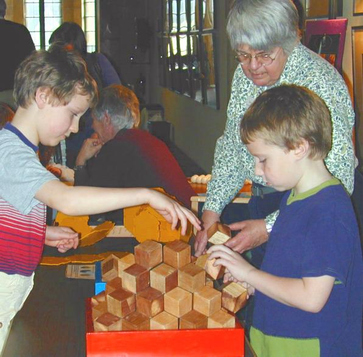
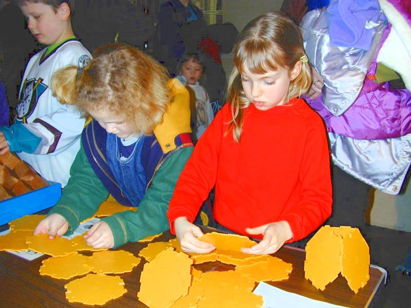
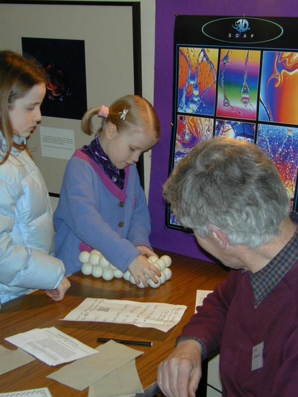
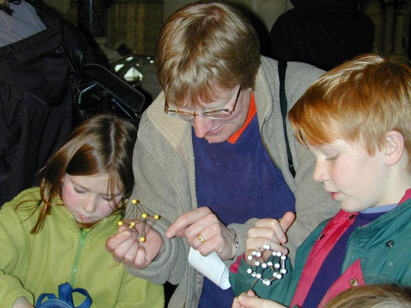

Mineral Detectives at the Museum
an educational half-term activity
A shortened version of this article appeared in the Dec 2001 issue of
'Crystallography News' page 12
The Oxford University Museum of Natural History decided to try to help
parents to amuse primary school children at the half term break in February
2001 by arranging entertaining activities on 3 afternoons. They set up
several display cases containing different minerals on the themes such as
''minerals and light', 'introduction to crystals, 'big mineral crystals',
'gemstones and decorative minerals'. These were accompanied by an
instruction sheet, 'The A-Z shiny sparklers trail' which had a map of small
stars to show you where to find the minerals with names beginning with that
letter. When children had found the mineral they could write it's name and
colour into a larger outline star, draw it, and say what they liked about
it. This was a competition, the entries were stored in the 'Big Book of
Natural History' and some may be stored on the website later.
A more interactive project was the 'Mineral Detective Sheet'. this consisted
of 8 'hands on' activities associated with mineral properties including
magnetism, shape, hardness and weight. There were 3 minerals for each
activity and using the clues on the sheet, children were asked to decide
between them. For example in the 'hardness' activity they could find out
which mineral would scratch the others because it is harder. Each activity
had a further question, for example "Look in the Industrial Minerals
display. Can you see any minerals that have special uses because they are
soft and slippery?" I will enquire whether I might be able to put these
activities on the BCA web page. Each activity needs an adult helper to keep
order and stop some of the children trying to discover how well the minerals
scratch their schoolmates.
I was asked to provide a 'crystallographic activity', to complement these
mineral ones. The accompanying pictures show children and their parents
discovering how shapes can fill space by building up crystals using wooden
model rhombic dodecahedral blocks on two bases which represent different
crystal planes, this complemented the activity about garnet in the 'mineral
detectives' activities.

These blocks were made as part of a BCA 'design an interactive
exhibit' competition in 1994. They have proved robust in use and stand up to
well to accidental falls. The second set of blocks from that competition
were bright yellow plastic 'clip together' polygons which made up into
truncated octahedra which also fill space. Unfortunately, these were rather
larger blocks, so they are usually taken apart for storage between
exhibitions. After doing this many times, we find that the 'clip' mechanism
becomes slack so that the blocks become too fragile to use as originally
intended.

They are now used in a different activity discovering what 3D shapes can be
built from 2D hexagons by allowing regular shaped polygonal holes. Similar,
but rather stickier, activities can use MATS (Mathematical Activity Tiles)
which are made from the same material as beer mats and can easily be stuck
together with white school glue. This is much cheaper than buying the
specially made plastic polygons.

A third activity showed how a crystal shape with flat sides can be built up
from layers of spheres. The image above shows a small girl wrestling with the
problem of how to assemble the rafts of spheres (pingpong balls stuck
together with plastic model glue). This too needs an adult supervisor
otherwise the balls soon become unstuck.
The last activity used the 'Improbabubbles', from Beevers Miniature Models.
These are wire frames in standard polyhedral shapes which are used with
dilute washing up liquid to explore minimal surfaces. these were popular
with all ages especially some of the parents.

Although the children were nominally between the ages of 7 and 11, many had
younger siblings, who naturally had to have a go too. One small girl barely
able to see over the table was fascinated, she clutched as many blocks as
she could carry & emitted very high frequency ear splitting squeals at
her mother's suggestion that she might let others have a go building with
the strange blocks. Perhaps the most enterprising was the toddler of 18
months who explored underneath the table where the soap films were placed,
and when found, was happily trying to drink from the backup bucket of water
for the soap films.
A good time was had by all!
Kate Crennell, March 2001
Acknowledgement for the images:
These images were taken by Helen Cowdy of the Museum staff, they are
copyright the Oxford University Museum of Natural History, we are grateful
for permission to publish them here. Admission to the Museum is free,
details of opening hours and special activities can be found on their
website at
http://www.ashmol.ox.ac.uk/oum/
Page last updated 19 Dec 2001
BCA Education page WebMaster
BCA@ISISE.RL.AC.UK
 Click here to return to BCA homepage
Click here to return to BCA homepage